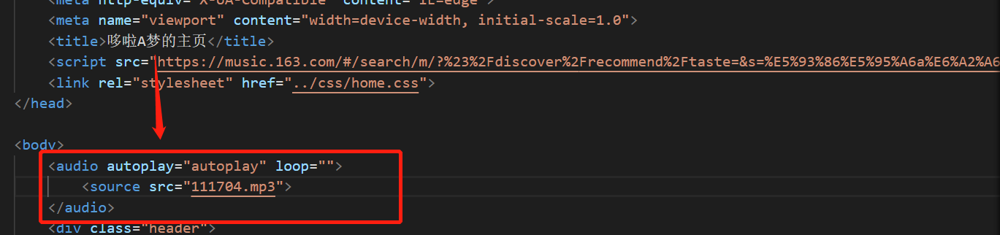

小组成员(1人)
- 姓名:刘梦婷
- 学号:0223268
- 班级:软件2211班
网站介绍
- 名称:哆啦a梦
- 主题:哆啦A梦
- 内容版块:整个作业一共由10个页面构成，其中包括:
1.登录页面:应用了js实现动画效果,在背景图上移动鼠标，背景图会跟着移动
1.主页:主页包括logo，导航栏，二级导航栏，侧边栏，轮播图和页脚等部分组成，导航栏可以进行页面之间的相互跳转，侧边栏添加了锚点链接，可以快速定位到页面的具体位置，轮播图(CSS实现）模仿的是淘宝轮播图，页脚处也可以跳转到作业报告页面。
3.子页面*4:每个子页面都包括页头，个别包括侧边栏，应用了锚点链接，可以对页面上的内容定位跳转；并且每个子页面都有一个按钮，点击按钮可以返回到主页。
影视部分:点击相应电影图片可以直接链接到腾讯视频等观看页面，同时利用css实现了鼠标移到图片可以放大缩小的效果
4.作业报告页面*1
- 选题目的:多啦A梦象征童心、开心、没烦恼、美好、理想、纯洁的友情，寓意着“无时无刻保护你、不离不弃、生死相随"的好朋友，就算处在人生低谷，也会有这样一个人无条件的对你好
网站内容
- 主要内容:介绍了《哆啦a梦》的创作背景，角色人物，以及相关的影视作品
- 重要步骤:在做这个网站时
确定主题(哆啦a梦)
先做好网站页面的骨架(页面布局)
然后在网上查找各种资料和图片，把内容填进对应的盒子
最后把各种外部链接、内部链接、锚点链接补充入对应位置
- 页面组织结构:包括logo，导航栏，二级导航栏，侧边栏，轮播图和页脚等部分
最终结果
视频展示<---请点击这里
自我评价
达到了作业的各个要求，但还不够完美，花了10天时间，才做好这个作业，我认为比较困难的地方:
- 主页轮播图处盒子长度太小，改长后图片展示效果会改变，达不到想要的效果。
- 背景音乐的添加 
网站亮点（网站实现的较好的部分）
- （亮点1）可以实现多个界面互通，每个界面具有连贯性
- （亮点2）网页看着较舒适
- （亮点3）网站设有较多flex布局
- （亮点4） 网站登录页面用到了js
- （亮点5）网站影视部分设有较多外部链接，可以直接跳转到影片播放界面
总结
做网页清楚了整个页面的整体布局，先整体后局部，把整体内容规划好之后，再补充每一块对应的内容。2明确每个模块要实现怎样的效果，并且自外而内的设置好每个标签的样式。3，相似的部分采用了同一张CSS样式表，提高了代码的执行效率，降低了冗余度。虽然做出来的网站还是比较粗糙，不能跟大牛们比，但是在做网页的过程中，我自己也重新学到了一些东西，得到了巩固
展望
希望自己以后做的网站能够越来越好，越来越完美，也希望这个大作业能得到老师的认可、得高分~